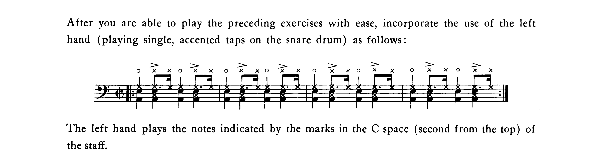

Searching for the World’s First Drum Book

When I recently wrote about Advanced Techniques for the Modern Drummer, I mused about how it’s one of the oldest drum set books still in print. After the fact, I began to wonder more and more if it is in fact the first book ever published to contain exercises written out for practice on a drum set. So that led me to today’s question: what was the first drum set book ever written?
To be clear, I’m interested in the first drum set book, not the first drum book overall. That would be a much more challenging question to answer since books of this sort go back several hundred years. But the drum set as we know it today is only about 100 years old. If you want a great rundown on the history of the instrument, check out a series of short videos drummer Daniel Glass made with Vic Firth.
For a while, I thought the world’s oldest drum book was Syncopation by Ted Reed. However, that was published in 1958 and is ten years older than Advanced Techniques. It’s also somewhat questionable to consider that a drum set book since it’s just bass drum and snare.
So I decided to take two approaches to do this research. One was to look for the oldest, unequivocal drum set book. For this, I would need to see a book with a discussion of at least one of the components of the modern drum set: kick and snare in addition to ride, hi–hat, and/or toms.
The second approach was to look for something a little more generic: kick and snare exercises, but with a specific mention of playing the bass drum with a foot pedal.
Simply googling “first drum book written” was useless — all I got were articles telling me what drum books I should pick up as I first learn the instrument. I decided to check out some of the internet book archives I’ve long heard of.
There are a few, but unsurprisingly Google Books is the only one really worth using; the other ones out there have terrible search functionality and/or limited results.
Knowing that Advanced Techniques was published in ’48, I figured I would just need to concentrate my search on books published between 1900 and 1947. Just punching “drums” into Google Books was way too vague, so I needed to narrow my search terms — too many results would show up just for a single year to reasonably sift through.
Intuitively, “drum set” would seem like a better search term, but “drum set” wasn’t a phrase that was used until about the 1930s. Prior, the more common term was actually “trap set” (which evolved from calling modern drum set accessories contraptions).
I decided to look through the introductory text of Advanced Techniques to get a better idea of what the lingo of the era was. Interestingly, Chapin doesn’t use “drum set” at all. Instead, I honed in on “snare drum”, “bass drum”, “cymbal”, and most critically, “foot” and “pedal”.
Google Books has a subject section for each book listing (for example, Advanced Techniques has something like “Drum set — Studies and exercises”). But searching by subject would sometimes turn up nothing. I also couldn’t help but notice that many of the copyright years for these older drums books were actually the renewed copyrights, not the originals. That was a very frustrating confound that I found no way around.
The oldest drum set book that shows up in Google Books appears to be Swing Drumming, first published in 1942 by none other than WF Ludwig. Unfortunately, it’s long out of print, and I couldn’t find a photo of the text to verify what the book is even about.
Information on this book is quite scarce, and as I was scouring the internet for more details, I found a college textbook called Encyclopedia of Percussion by John H. Beck. As it turns out, the final section of this book is “Published Writings on Methods for Percussion”. The book is available at one of the CU libraries; lucky for me, I got to view pages of the book online since I still have my CU credentials (I know college is exorbitant, but there really are a lot of services afforded to me that I’m still taking advantage of).
The list is incredibly comprehensive, and I really can’t imagine how the author researched all of it. There’s a section specifically about “snare, side drum, total percussion, and drum set” books, so all I had to do was peruse the titles and research the ones that caught my attention as possibly being about the drum set.
The oldest drum set book still in print appears to be Gene Krupa’s Drum Method. This had previously slipped my radar, since it’s an introductory book, and renewed copyright is from 2006. Originally published in 1938, this is also the oldest book I could find that features our modern drum set notation, evinced by a sample PDF I found courtesy of Alfred Music Publishing:
Older still, however, is Dixieland Drumming by Ray Bauduc, published in 1937. It’s out of print, but improbably, I was able to snag a PDF. The notation is a bit clunky, but nonetheless, the book explicitly mentions bass, snare, toms, and cymbals (including the “sock” cymbal, and archaic term for the hi–hat). This might be our winner for the first drum set book ever written.
Honorable mention goes to The Rominger Drum Method — A Complete Course of Instruction. Published in 1932, this book mentions snare, bass, and cymbal, but it appears to be in the tradition of double drumming, not drum set playing involving the feet.
Unfortunately, there are older books in Beck’s list that I can’t find any information on to verify if they are true drum set books. Not even a paltry entry in Google Books. One potential contender is Andrew V. Scott’s Modern Dance Rhythm from 1925. I can’t find any images of the book’s text, but I did find this blurb from a FaceBook page called Drum Book History:
Modern Dance Rhythm is devoted entirely to dance work and was written to enable those desiring to learn this kind of work, to do so. It would be impossible to write a book containing all forms of rhythm as rhythms are created through melodies. However, in this book there will be found many forms of rhythm, which will aid the student in forming many novel and up-to-date ideas. The snare drum, bass drum and traps are discussed and the student is shown their many uses in the modern dance orchestra.
Whoever runs this page also has an Instagram account. I wish this person(s) would share more shots from the insides of the books since they’ve (somehow) gotten ahold of some very obscure and rare titles. I highly doubt anyone would get slammed with a cease and desist.
It might not matter anyway — Modern Dance Rhythm may just be a double drumming book.
Another one that caught my attention was 50 Hot Cymbal Breaks and 70 Modern Drum Beats, written by Ralph Smith in 1929. The use of “cymbal” in the title makes me wonder if it has written out exercises for the ride or hi–hat. I may never know, although a few university libraries in the midwest claim to have a copy…
To answer my second question, the oldest book I could find that mentions bass drum playing with the foot would be The Bower System for Percussion: System for Drums by Harry Bower, published in 1911 (just two years after the modern bass drum pedal was patented). This was a bit easier to track down — these books are so old that they are in the public domain now, and if Google Books has a scan, you can pursue it as you please.
So there you have it. My methodology was problematic no doubt, but I at least have a compelling answer. Truth be told, it could be the case that the real answer is some very obscure book, first published with little publicity and now out of print, lost to time forever. But at least I got somewhere.
Posted on September 19, 2021